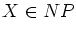

for all .
Is G bipartite?is in both NP and CoNP.
- (a)
- (5 points) Give a maximum cardinality matching for this graph.
- (b)
- (5 points) Formulate the problem of finding the maximum cardinality matching in the form .
- (c)
- (5 points) Give an optimal solution to the linear programming relaxation of the integer program given in part 3b.
- (d)
- (5 points) Suggest an additional constraint for the LP relaxation.
- (e)
- (5 points) Formulate and solve the dual of the LP relaxation with
the additional constraint.
(The dual of the problem
 is
is
 .)
.)
- (a)
- An instance d of a feasibility problem 
depends upon two positive integer parameters m and n.
Assume d requires storage m2n in binary, and that we
know an algorithm A which solves d in time 2m+n.
- i.
- Can we conclude X is in P?
- ii.
- Can we conclude X is not in P?
- iii.
- Assume we know in addition that
for every
instance d of X. What can we conclude now?
- (b)
- i.
- Is the given (s,t) flow optimal? (The numbers on the
arcs indicate the capacity and the flow.)
- ii.
- Is the given matching optimal?